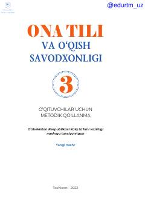

3O3-sinf ona tili va o'qish savodxonligi fani o'qituvchilari uchun metodik qo'llanma.
Ushbu metodik qo'llanma 3-sinf o'qituvchilari uchun ona tili va o'qish savodxonligi fanini o'qitishda zamonaviy yondashuvlarni qo'llashga mo'ljallangan. Kitobda dars jarayonini tashkil etish, o'quvchilarning kommunikativ ko'nikmalarini rivojlantirish va mavzularni hayotiy vaziyatlar bilan bog'lash bo'yicha tavsiyalar berilgan.